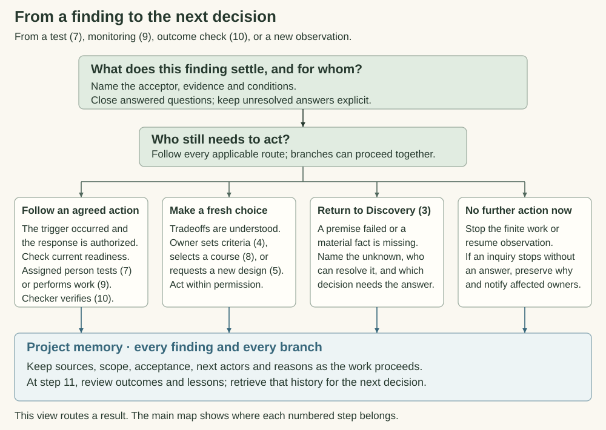

How will the tower crew get the air handler inside?
The owner’s representative sets October 1 as the target for lower-floor occupancy. Aura Pro and the scheduler use the project schedule, crane bookings, and production rates from comparable jobs to simulate two construction sequences. Lifting the air handler before installing the façade gives the mechanical crew open access, but leaves interior work exposed through winter. Giving the façade crew the crane first encloses the floors sooner. The team prefers that sequence because it protects interior work and keeps ventilation testing on track to finish September 30. Aura Pro flags the assumption behind that forecast for the foreman: the framed unit must fit through the one bay left open. The foreman checks the clearance while the crew can still leave out the adjoining panel.
The foreman brings back a measurement and an alternative. An installed bracket leaves 99½ inches clear. The foreman records the reading and photo in Raken and radios the superintendent. The lift lead repeats the check. Even allowing ¼ inch for uncertainty, the opening is too narrow for the supplier’s 100-inch minimum frame width. The superintendent holds the lift and sends the crew to the next approved bay. The foreman proposes leaving two panels out.
The scheduler compares what each route does to opening day. The lift lead checks the wider route and confirms the framed unit can pass. Aura Pro reruns the schedule with two options. The other work needed for occupancy is on track, so the ventilation testing calendar controls opening day. Delivering the unit in sections solves the access problem, but assembling it indoors makes it too late for the booked ventilation tests. The next available round is three weeks later and finishes October 21. The lower floors can open the following day, moving the forecast to October 22. Lifting the assembled unit through two bays on the booked crane date keeps the September tests and the October 1 opening forecast. The design reviewer accepts the wider opening and its temporary weather protection. The project manager prepares the $4,000 change in Procore.
The project executive commits the money. The superintendent releases the crew. The superintendent has $3,000 left in the delegated allowance, so the general contractor’s project executive signs the change and the subcontractor countersigns. The superintendent then issues the revised instruction. The foreman acknowledges which panels to hold and records the protection, lift, and close-in. The accountant verifies the commitment in Sage. The scheduler updates the forecast from actual progress, and the owner’s representative checks the actual occupancy date against October 1.
Years later, a facilities manager planning a replacement can retrieve the frame dimensions, which panels were left out, and what the crew observed during the lift. That history tells the manager where a fresh survey is needed.
Obligation, question, and method
An inquiry can begin with intent: someone wants to create, change, understand, or sustain something. It can also begin with a finding: someone encounters a condition that calls a goal, an assumption, or an earlier result into question. Either way, Aura Pro asks what decision this could change and who is responsible for it.
At a car wash, the opening check finds a pump that will not start. The shift lead opens the working bays, and the technician investigates the failed pump. Once the repaired bay passes a test wash, it can reopen. The next morning’s checks still come due.
| Layer | What Aura Pro keeps track of | Example |
|---|---|---|
| Obligation | The outcome someone is responsible for, who can change it, and what would count as fulfilling it. A finite obligation can close. A standing obligation continues across individual decisions and repairs. | Keep a facility ready for customers each morning. |
| Question | The answer currently owed, who needs it, what decision it would change, and what evidence or judgment would settle it. Several questions can serve one obligation. | Can the shift lead return this unit to service? |
| Method | The way to obtain that answer with the evidence, time, and access available. Several methods can serve one question. | Read the repair report, then observe a functional test under operating conditions. |
In this example the obligation continues, the question closes when readiness is established, and the method changes as evidence comes in. The seven examples illustrate recurring combinations of these layers.
Who acts on a result?
What does the finding settle, and for whom?
The person responsible for the question compares the finding with its criterion. State the answer they accept, the conditions it applies to, and anything still unresolved. Close a question when the evidence settles it. If the evidence is inconclusive, keep the question open and state what the observation did establish. Keep the finding with its source at step 11.
Who acts next, and why?
If the finite job is complete and nobody else needs to act, stop. Otherwise, consider each affected person separately. One finding can trigger an agreed response for one person and open an inquiry for another. Both can proceed as soon as they have what they need.
| Reason for a next step | Who acts and where the work resumes |
|---|---|
| Triggers an agreed action | The trigger has occurred and the response is already authorized. The assigned person performs the planned test (7) or work (9). The checker verifies the effect (10). |
| Calls for a fresh decision | The facts and tradeoffs are understood, but someone still has to choose. The owner settles a preference or success criterion at 4. The person with authority selects or approves a course at 8 and tells the executor what to do. If the owner requests another design under known constraints, the designer starts at 5. |
| Gives a reason to return to Discovery | A premise failed, evidence conflicts, or a material fact is missing. The decision owner names the unknown, who can resolve it, and which choice depends on it (3). Once the answer is sufficient for that choice, resume design or comparison (5–7), selection (8), or the agreed action it triggers. |
An outstanding check stays with its checker. A result that has no present consequence can be kept with its source at 11. In shared work, Aura Pro identifies the recipient and keeps a handoff open until someone accepts the next action. On a solo job the same person can observe, decide, act, and check.


Decide what deserves attention
For an intent, identify the outcome and the first decision needed to advance it. For a finding, establish what was observed, where, and when; then identify the assumption, obligation, or prior answer it might affect. It can reopen a settled question, raise an entirely new one, or simply add context. A finding can warrant telling the responsible person before anyone has authority to do additional work.
Three judgments determine priority. Consequence: would plausible answers change the action or expose an important unmet obligation? Timing: when will the choice become expensive to reverse, and what happens if we wait? Effort: which available check would give sufficiently useful evidence in time? A frame measurement before the façade goes up scores high on all three. A fourth heater can be checked at an already scheduled visit. Running the tap shows whether the sink now drains during normal use. If the consequences hinge on a human preference, the relevant inquiry is a conversation with the person who owns the choice.
Choose the next move
| Move | When it makes sense | What happens next |
|---|---|---|
| Investigate | Plausible answers favor different actions, and a check can distinguish them at worthwhile effort. | State the competing possibilities and what observation would change the decision. Choose a method for the current question. Open a child only if a distinct answer is owed. |
| Act | The evidence supports a choice, or one action works across the remaining plausible conditions. A reversible commitment can preserve options while more is learned. | State the expected effect, the check, and who carries the work. In self-operated work the person coordinates it. In shared or delegated work the assigned coordinator follows through on each accepted handoff. A choice outside granted authority goes to the person who can decide. |
| Wait | A known event, measurement, approval, or scheduled visit will improve the choice, and delay is acceptable. | Keep the question open with an owner, a trigger, and a latest useful decision time. If the deadline comes first, reconsider acting under uncertainty or take the tradeoff to the owner. Independent work continues. |
| Stop | The criterion is met, an answer has been delivered, or further inquiry would have too little value. The owner may also withdraw the objective. | Say which outcome applies. A verified result can close a finite obligation. An inconclusive inquiry can end with an explicit unknown returned to its parent. A standing obligation resumes observation. A withdrawn objective records why work ceased. |
Establish what is true
Start with a claim precise enough to check: which object, in what state, at what place and time? Compare the sources against that claim. A purchase order establishes a commitment. A receiving ticket identifies something delivered. A serial number observed on site can connect that delivery to the unit the plan requires.
When sources disagree, preserve the competing accounts and ask what observation would distinguish them. A schedule can say the equipment arrived while the crew is still waiting. The wrong unit may have arrived, it may be in another area, or the schedule may carry a planned date as an actual. Checking the ticket, location, and serial number can establish which unit is present. Explaining why the schedule diverged is a separate question if that explanation matters to another decision. Record an unresolved state where the evidence runs out. When a correction arrives, revisit the decisions that relied on the earlier claim.
Generate alternatives
When familiar options all perform poorly, identify the constraint each encounters. Work backward from the effect that must be achieved and ask what could vary: the method, sequence, timing, resource, physical arrangement, or division of work. People close to the work may see a possibility the model has never represented. Ask them what they could change while preserving the owner's goal.
For each credible alternative, state how it would work, what must be true, and what it costs or puts at risk. Compare it with the current course under common assumptions. If a feasible choice already serves the goal, the owner can commit. If one unknown could reverse the choice, investigate it while the choice is still open. A forecast supplies reasons to choose; a later observation establishes what actually happened.
Manage the question while choosing a method
Use the answer owed to distinguish the moves. Use the obligation's success criterion to recognize when the frame itself has changed.
| Move | Decision rule | What Aura Pro preserves or changes |
|---|---|---|
| Continue | The same answer is owed and the current method can still settle it. | Keep the question and method. Identify the next observation or step. |
| Switch methods | The same answer is owed, but another method can establish it more directly or reliably. | Keep the question, owner, and answer criterion. Carry forward what earlier methods established. |
| Nest a question | A distinct answer can be obtained and returned while the parent decision remains open. | Record what the child owes, what would settle it, and which parent choice it affects. A child can open children of its own. One result can serve several decisions; independent work continues. |
| Reframe | A discovery changes the premise of the question enough to make its old answer beside the point, or the owner revises what counts as success. | Revise the smallest affected question or obligation, preserve the reason, and revisit only choices that depended on the former premise or criterion. A change in the owner's priorities goes back to the owner. |
| Return, close, or monitor | The evidence settles the question for its stated scope, or establishes the limit of what can be known now. | Return a child result with its uncertainty. Close a finite obligation when its criterion is met. Keep a recurring obligation active and carry unresolved exceptions forward. |
In the tower decision, the clearance check is a nested question. The lift lead can settle it while the scheduler still owes the team a sequence. Switching from a comparable installation with a different lifting frame to a field measurement changes the method. The answer owed stays the same.
A reframe would occur if the owner withdrew the phased-opening requirement and chose a single opening for the entire building. Aura Pro would revisit the sequencing question and reconsider whether the early lift still merited investigation. Discovering that one bay is too narrow changes the means; the owner's hypothetical choice changes what the plan is trying to achieve.
Learn from the outcome
Before a consequential choice, keep the expected result, the assumptions that support it, and what would count as success or failure. After the work or trial, compare that expectation with dated observations under the conditions that actually occurred. Ask which part of the reasoning the outcome tests. Did the intervention work? Was a prerequisite missing? Did the world change? Could the check itself be misleading? Preserve competing explanations while the evidence leaves them open.
Update knowledge at the scope the evidence supports. A measured clearance can remain valid even if an unrelated delay defeats the opening forecast. An installation detail seen in three failures can justify checking a fourth unit; finding it commonly in healthy units would weaken its value as a predictor. A changed goal calls for judging the work against the criterion in force when each decision was made. Link the result, rationale, remaining uncertainty, and scope to the relevant asset, method, or project so someone else can recover them years later.
Learning also applies to attention. Did the observation distinguish the alternatives? Did it arrive while a choice was still available? Did acting on it improve the decision, or merely confirm what the team would have done anyway? Keep useful negative results. Across comparable cases, use this history to improve both forecasts and the choice of what to investigate next.
The seven examples
| Example and entry | Who accepts the answer and what it settles | Who acts next |
|---|---|---|
| Clogged sink · Pooling starts the job at 1. After clearing the stopper, enter at 10. | The person at the sink runs the tap at handwashing flow and accepts that the drain keeps up. That settles whether normal use has been restored. | That person closes the job. If water still pools, they return to 3 to find what is still restricting flow. |
| ’67 Chevy · The discovery behind the dash brings the restoration goal into question (3). | Comparing the modification with the factory layout settles a factual question for the owner. Returning to factory wiring would remove their father’s work. | The owner pauses removal, makes a fresh choice to preserve the modification (4), and gives the restorer the revised instruction. The restorer follows it (9). |
| Attached garage · Compare the proposed door location at 7. | The designer accepts the survey evidence that runoff collects at the proposed threshold. The owner accepts the assessment if identifying the consequences was the assignment. If a recommendation was requested, the designer still owes one. | With grading and access tradeoffs understood, the owner can keep the current opening at 8 or ask for another layout at 5. If the drainage depends on an unmeasured elevation, the designer goes to 3 and requests that measurement. |
| Duplex portfolio · Three repairs prompt a question about a fourth heater at 3. | At the scheduled visit the technician performs the agreed inspection (7). The manager accepts the photo as establishing that this heater lacks the suspected installation detail. | The manager closes the local inquiry and leaves the heater in service. For the portfolio, the manager agrees to review the next comparable service record that shows both the installation detail and whether the heater was working. That record triggers the comparison (7). |
| Iron Man suit · Enter at 7 with a loaded bench test. | The builder accepts a repeatable result as the answer to whether the joint binds under that bench load and mounting. The cause of the assembled failure can still be open. | The builder follows the planned test branch: inspect under load if it binds, check the assembled mounting if it moves freely. If identical recorded setups give opposite results, the builder goes to 3 to find what differed. |
| Car wash · The attendant starts the opening checks at 9. | The shift lead accepts that bay three cannot open now because the pump failed its check. The cause and the bay’s readiness after repair are still open. | Under the standing plan the lead keeps bay three closed and opens the ready bays (9). The technician investigates why the pump failed (3). After repair the incoming lead runs the test wash (10), accepts a pass, returns the bay to service, and closes the exception. |
| Skyscraper · The opening objective (1) leads to a framed-clearance check (7). | The lift lead accepts that the framed unit cannot pass through one bay as planned. That settles the one-bay question. The opening date remains a forecast. | The superintendent chooses another approved bay for the crew. The scheduler needs the lift lead to establish whether two bays will admit the framed unit (3). Once confirmed, the scheduler compares dates (5–7). After review and funding, the crew follows the revised instruction (9). The owner’s representative checks actual occupancy against October 1 (10). |
Open architecture questions
The last design review identified three questions for further work.
- When a finding’s relevance is uncertain, what small check or later observation should bring it back into consideration?
- When two inquiries need the same person or resource, what would be lost by doing either one second?
- What can later evidence establish about a decision to act, wait, or stop, given that only one path was taken?